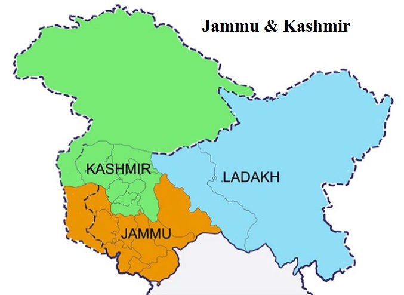

Brief Introduction of Jammu & Kashmir
Jammu & Kashmir is a newly created Union Territory in India consisting of two divisions:
Jammu Division & Kashmir Division, both of which are administered by the Central Government of India.
It is located to the north of Himachal Pradesh & Punjab and to the west of Ladakh.
Jammu is known as the City of Temples & offers plentiful sightseeing opportunities with its gardens, palaces, forts & religious attractions, the most famous of which is Mata Vaishno Devi in Katra.
Kashmir Valley is famous for its meadows, lakes, high altitude passes, hill stations, Mughal Gardens, Dal Lake, Shikara Ride & ancient religious sites